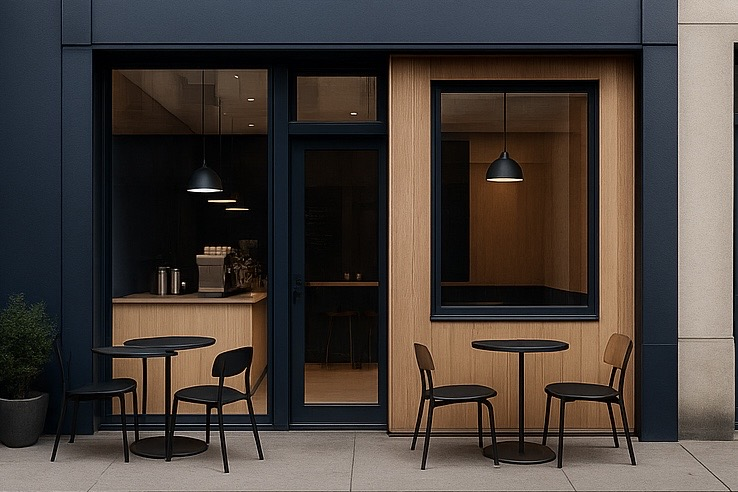
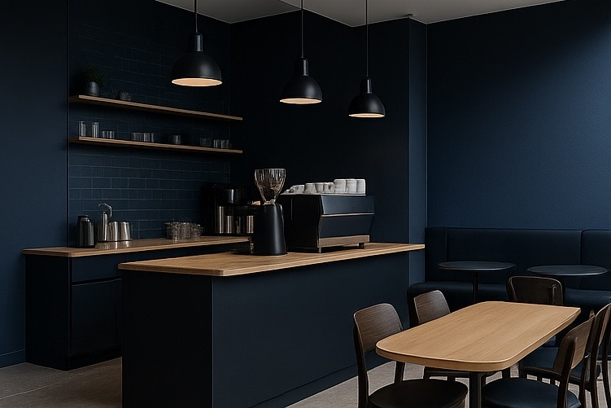
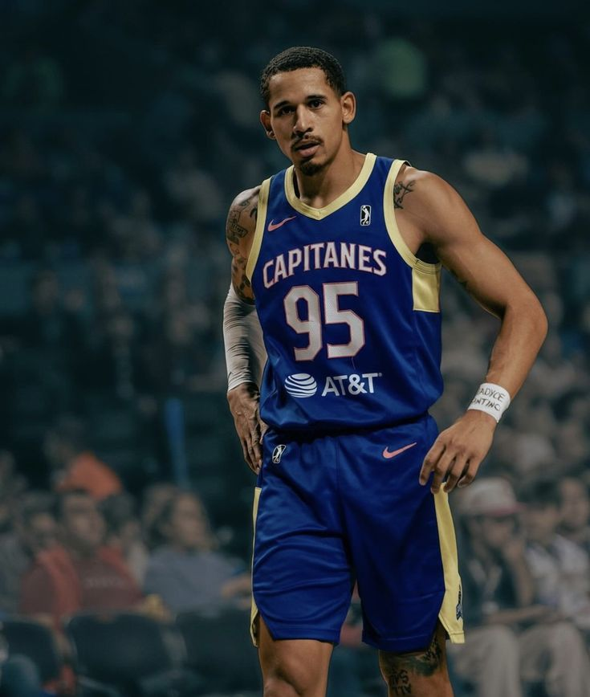

Av. Paseo de Las Gaviotas s/n, Valle de las Garzas barrio 5, 28219 Manzanillo, Col.
Ubicación
Paseo Álvaro Obregón, E/Morelos e Hidalgo SN, Zona Central, 23000 La Paz, B.C.S.
UbicaciónAquí comienza tu momento favorito del día. Ya sea para disfrutar de un buen café, compartir una charla o simplemente hacer una pausa, estamos aquí para ofrecerte un espacio cálido, cómodo y con el sabor que tanto te gusta. Descubre nuestro menú, conoce nuestras opciones de servicio y déjate llevar por el aroma del café recién hecho.
Información
Aquí puedes consultar nuestro menú. Encontrarás una variedad de cafés, bebidas frías, postres y opciones saladas para todos los gustos. Todo preparado con ingredientes frescos y de calidad.


Ofrecemos distintas opciones de servicio para que elijas la que mejor se adapte a tu día. Ya sea que prefieras disfrutar en el lugar, llevar contigo o recibir tu pedido donde estés, estamos aquí para hacer tu experiencia más cómoda y deliciosa.
“El mejor café que he probado en la ciudad. El ambiente es acogedor y el personal súper amable.”
– Laura G.

“Perfecto para una tarde tranquila. Sus postres son una delicia y el café siempre está en su punto.”
– Juan T.

“La atención al cliente es excelente. Volveré sin duda. ¡Muy recomendable!”
– Tyler O.
Tenemos tres ubicaciones diferentes donde podras visitarnos en La Paz, BCS